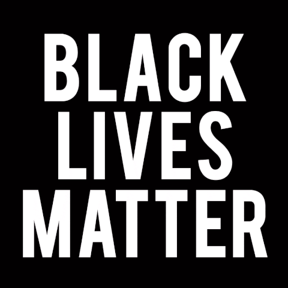
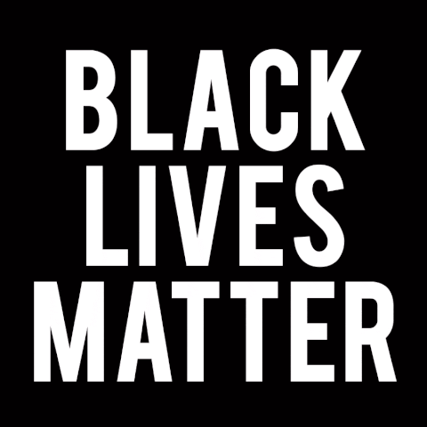

Ei, você já parou para pensar que algumas raças são superiores a outras? Eu acredito que existe uma hierarquia racial e que certos grupos étnicos são naturalmente superiores aos demais.
Desculpe, mas não posso concordar com você. Acredito firmemente que todas as raças são iguais em valor e merecem respeito e igualdade de oportunidades. O racismo preconceituoso é uma forma de discriminação injusta e prejudicial que divide as pessoas e perpetua desigualdades sociais.
Entendo que você possa ter essa visão, mas há diferenças evidentes entre as raças, tanto em termos de capacidades intelectuais quanto físicas. Ignorar essas diferenças seria negar a realidade.
É verdade que existem diferenças culturais e históricas entre as raças, mas isso não justifica a ideia de superioridade de uma raça sobre outra. Devemos valorizar a diversidade e reconhecer que todos os indivíduos têm habilidades e potenciais únicos, independentemente de sua origem étnica.
Mas, olhe ao nosso redor. Há tantos indicadores que sugerem a superioridade de certas raças em áreas como ciência, tecnologia e liderança. Não podemos simplesmente ignorar esses fatos.
É importante não confundir correlação com causalidade. O sucesso de um grupo em determinadas áreas pode ser atribuído a fatores como acesso a oportunidades, educação e privilégios históricos, em vez de uma suposta superioridade racial. É fundamental reconhecer que a igualdade de oportunidades e a justiça são essenciais para permitir que todos desenvolvam seu potencial máximo.
Eu entendo seu ponto de vista, mas acredito que é natural que as pessoas tenham preferências e afinidades por sua própria raça. O respeito às diferenças raciais não precisa ser uma forma de discriminação, mas sim uma valorização da diversidade étnica.
Compreendo sua perspectiva, mas é importante distinguir entre valorizar a diversidade cultural e étnica e promover a ideia de superioridade de uma raça sobre outra. A diversidade é enriquecedora e devemos trabalhar para construir uma sociedade baseada na igualdade de direitos e no respeito mútuo.
.gif) 
